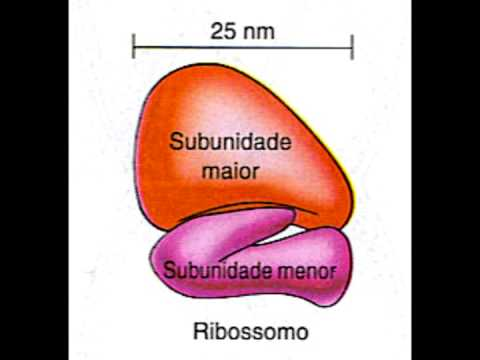

Os ribossomos são pequenas estruturas em forma de grânulos que estão presentes nas células procariontes e eucariontes.
Eles são fundamentais para o crescimento, a regeneração celular e o controle metabólico.

A função dos ribossomos é auxiliar na produção e na síntese das proteínas nas células. Além dele, participam desse processo as moléculas de DNA e RNA.
Os ribossomos reúnem diversos aminoácidos durante a síntese proteica através de uma ligação química chamada de ligação peptídica.